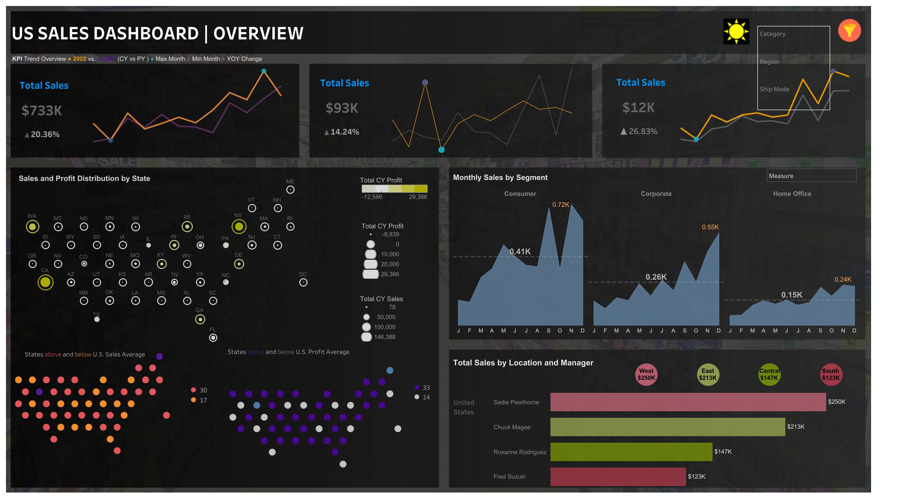
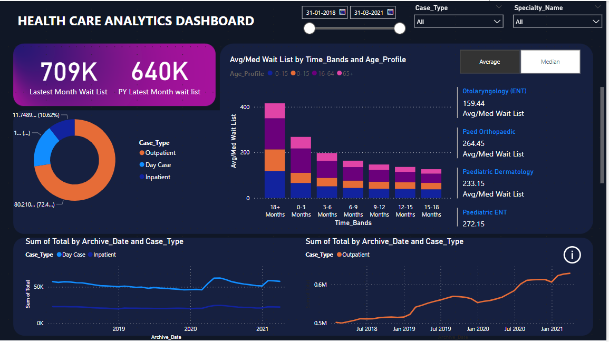

Skills:Python,Pandas,Excel,Matplotlib,Keras,Tensorflow,Neural Networks
Software Defect Prediction is an important aspect in order to ensure software quality. It aims to identify fault-prone areas in code, optimizing testing efforts for efficient software release.In this project we use Random forest, Convolutional Neural Networks, SVM, Decision Tree,LSTM to train the model with the data.We conducted experiments on 100,000+ C/C++ programs, achieving an average recall, precision, and accuracy of 0.945, 0.971, and 0.976, respectively.

Skills:Python,ARIMA,Matplotlib,Exploratory-Data-Analysis,Time series Forecasting,Numpy,Seaborn
The main objective of crime analysis is to provide essential insights to law enforcement agencies, improving their efficiency in crime reduction. The report employs statistical methods and data visualization techniques to identify outliers and unusual patterns in the dataset. It also examines potential patterns and correlations between demographic factors and specific crime types. Finally, time series forecasting methods like ARIMA or Prophet, are utilized to predict future crime trends.

Skills:Python,Matplotlib,Seaborn,Clustering,Customer Segmentation
In the dynamic landscape of the retail industry,the
records encapsulate essential insights into customer interactions within the online commerce realm. The application of RFM (Recency, Frequency, Monetary) analysis to this dataset presents a significant opportunity for unraveling actionable insights.Employed clustering techniques, such as K-Means clustering, to segment customers based on their RFM scores.Analyzed and profiled each customer segment, describing their characteristics based on RFM scores.

Skills:Predictive-Modeling,Python,Numpy,Scikit-learn,Classification
This project endeavors to harness the power of machine learning methodologies to construct a classification model. The model's
purpose is to analyze EEG data and effectively categorize it into distinct seizure types.
As we delve into the technical intricacies of this project,we elaborated on data preprocessing, feature extraction, models election, training strategies, evaluation metrics, and future work, collectively charting the course for a comprehensive exploration of epilepsy management through computational methodologies.

Skills:MySQL, NoSQL, Neo4j,Data Modelling
CallerScan is a cutting-edge caller identification application that addresses the rising concerns related to privacy and security in the digital age. This project outlines how the CallerScan system operates to provide users with a robust caller identification solution.
Designed conceptual data models such as Entity Relation (ER), EER, and UML diagrams in draw.io.
Developed a normalized relational database (3NF) to avoid redundancy in the database using Microsoft SQL Server.
Implemented database features such as triggers, indexes, views of CRUD operations and stored procedures between entities to solve complex functionalities for query optimization increasing performance by 25%.

Skills:Tableau,Statistical Analysis
Utilized Tableau visualizations of different analytical graphs to understand Sales in US by using custom formulaes like Current year sales,Previous year sales,Window Functions etc.Intially performed data preprocessing to predict Sales & Profit distribution by State,Monthly Sales by Segment,Total Sales by Location.Crafted dynamic KPI trends using 10,000+ sales data,
illustrating year-over-year sales performance with trend lines, streamlining monthly statistical analysis
Creating 15+ visuals such as line, bar graphs, honeycomb chart and area chart etc,
for clear sales and profit distribution insights by segment. Conducting in-depth sales analysis for actionable insights

Skills:PowerBI
Created interactive visualization using Power BI for HealthCare Analysis that involved Requirement Gathering, Data Collection, Data Transformation & Modelling, using visualization by adding Interactivity & Navigation.
Administered current status and trend analysis of patient waiting lists, conducting detailed evaluations to inform resource allocation and healthcare strategies.
Monitored current status of patient waiting list and analyzed historical monthly trend of waiting list in inpatient and outpatient categories .
Detailed specialty living and age profile analysis.